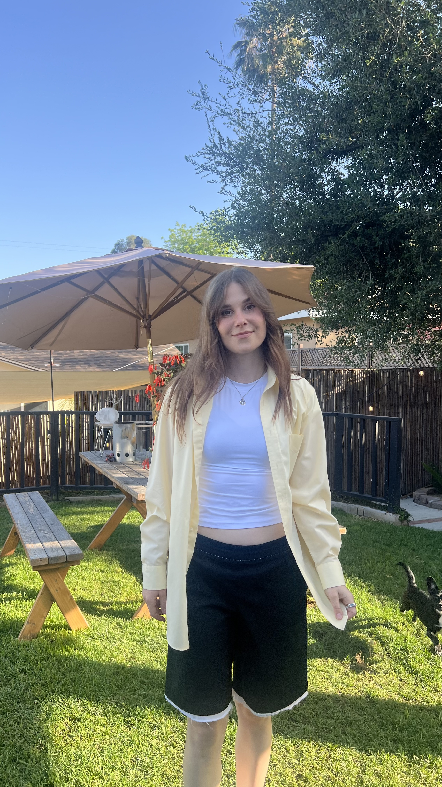

Organizational psychologist, policy architect, and health-tech founder. Building AI tools that make health information accessible to everyone — from Amsterdam trauma centres to Los Angeles startups.

Current Work
Since November 2025
Co-Founder & CEO · Los Angeles
Co-founded Collabiora to solve a problem Esther encountered first-hand across a decade of health research: patients, clinicians, and researchers all drowning in information they can't easily navigate.
Yori is Collabiora's AI — designed to distil complex health data into clear, actionable answers for anyone who needs it.
Since May 2023
Policy Advisor & Researcher · Netherlands (Remote)
Leading national mental health policy for 200,000+ uniformed personnel — police, military, emergency services — across the Netherlands.
Architected national PTSD support guidelines, secured a €200,000 Ministry of Justice grant, and built monitoring systems that track measurable reductions in trauma incidents across regional programmes.
Impact
The Company
Esther co-founded Collabiora in November 2025 with Sanskriti Desai. The company's core product, Yori, is an AI built specifically for health navigation — helping patients understand their diagnoses, supporting researchers synthesising evidence, and helping healthcare providers access the information they need faster.
Esther's decade in clinical and policy research — across cancer care, trauma, and public health — directly shapes how Yori thinks. The product isn't built from the outside in. It's built from lived institutional knowledge.
Collabiora targets individual subscribers, hospital licensing deals, and venture investment. The long-game is institutional adoption: getting Yori embedded in the places where health decisions actually get made.
Publications
Using a modified Delphi procedure to select a PRO-CTCAE-based subset for patient-reported symptomatic toxicity monitoring in rectal cancer patients
Geurts, Peters, Feldman, et al. · DOI: 10.1007/s11136-024-03767-0
Selecting a PRO-CTCAE-based subset for patient-reported symptom monitoring in prostate cancer patients: A modified Delphi procedure
Feldman, Pos, Smeenk, et al. · DOI: 10.1016/j.esmoop.2022.100775
SYMPRO-Lung: Symptom monitoring with Patient-Reported Outcomes using a web application among lung cancer patients in the Netherlands
Feldman et al. · DOI: 10.1136/bmjopen-2021-052494
SYMPRO-Lung: PRO monitoring using a web application among lung cancer patients in the Netherlands
Feldman et al. · Annals of Oncology, 31, S801
Background
A decade of
clinical research,
policy architecture,
and institutional
health work —
distilled into a product.
Esther holds an M.Sc. in Work & Organisational Psychology from VU Amsterdam and a B.Sc. in Psychology from Erasmus University Rotterdam. Before Collabiora, she spent four years in clinical cancer research — at the Netherlands Cancer Institute and Radboudumc — pioneering patient-reported outcome frameworks now used across 13+ Dutch hospitals. She speaks six languages and holds a US Green Card. Based in Los Angeles.